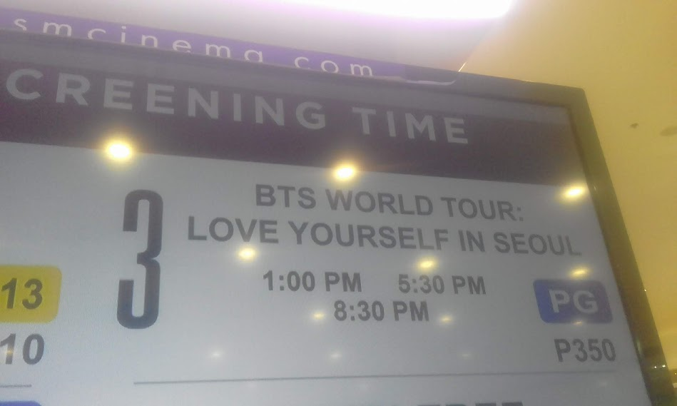
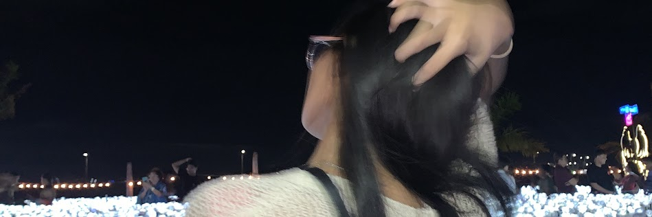

I was a child when the peak of life happened, I can still remember how 2014 used to smell and look like. It smells like rubber bands, pogs, and upper cards, it also looks like the battlefield in counterstrike, or the dancing arena in iDate, or even better, the seeds in minecraft as well as the streets in gta. Not to mention, the rise of the internet. Nostalgia is like a pain-killer that kills you (does that even make sense ...), it's like a drug that is so addicting to the point that it makes you want to unalive yourself but at the same time, it makes you alive (i don't make sense at all ...). Writing this blog with nostalgic songs on my spotify makes me want to unalive myself (don't take this seriously LOL) because of the sudden surge of nostalgia (say you'll never let me go ~ Roses by The Chainsmokers).

Nostalgia is a proof of living, a proof that life is worth living, and it traces you back into the days where you used to feel something. Sometimes, being so sentimentally involve with the past version of the series of events in your life won't get you through life, why? Simple, it is because nostalgia cannot shape you into your new version.
Nostalgia might be bad or good for someone who is full of ambition. No in between.
The Five Stages of Grief: An Untold Misery of My Soul.

This blog is inspired by Elisabeth Kübler-Ross, MD, on her book On Death and Dying, that was published in 1969. The content of this blog is the unsent letters, or should I say, the words I wanted to send but never got the chance to. My version of The Five Stages of Grief is a collection of letters I have in my notes and journal notebook. These letters are the proof of what I am capable of creating amidst the most painful phase of my life. I have gone through a lot of different heartbreaks in my life, but this one is just different. I was born to love, I knew it from the moment I cry for every little things I have encountered in my childhood.
The saddest part of being a lovergirl or should I say, yearner? kidding aside! The most gut wrenching part of a human soul is to experience a heartbreak—friendship, family, and even worse, in relationship. As a lovergirl myself, I find heartbreaks beautiful, weird isn't it? In heartbreaks, you can experience a soul that is yearning for the love that was supposed to be for a lifetime. In heartbreaks, you can feel the soul of a human who is deprived of love, deprived of touch, and deprived of understanding. In heartbreaks, you just know. Below are the five stages of grief in my own version.
Denial
Have you ever experience begging for something that is so freaking bare minimum to the point that you look like a fool? Because, Yes! I did! There were so many freaking signs that I have ignored in the middle of our relationship.
Do you feel ashamed? having me as your nililigawan? Is it because im not prettier? or worse, talented?
Written on:
I was insecure, yes. I didn't know back then that love isn't supposed to make you feel insecure. Despite that, I beg for him to change because I had this mindset that, I can change him. no freak you can't.
My friencds gave me an earful about how redflag he was but still, I was competent that I could change him.
Anger
The wound is still fresh and
yet I pretended that I was over
it, that I got over it, that I
got through it, that I got
ove-Repeating the same
sentences, just like how I keep
on repeating the same
gaslighting technique on
myself.
I may look like a fool, but I really am. For the past months that we've been together, I genuinely care about you—about us. This is the only way I can say this to you
I tolerate what I've tolerated and was blindly and foolishly in love with you, but you know what, I never regret it. In fact, I was grieving, still grieving.
I'm still praying for you when I get the chance to visit a church, I was hating myself the other day because my only choice of moving on was to hate you, instead, I hate myself more.
I'm so happy that I got to experience love with you. Even though it hurts to accept the fact that I can't hold you anymore, I know I'll get through this.
You know, I really prayed na we could survive all the possibilities, I saw future with you, I prayed and then prayed, and then—gone.
I will always be your number one supporter! Chase your dreams even further, take care always.
May this letter finds you well
Written on: September 20, 2024
Bargaining
I miss you.
Written on:
Depression
Love is wonderful, isn't it? But sometimes, it becomes terrifying. It can make you feel more alive, but it can also leave you broken and shattered. I'm left wondering why someone capable of creating beauty would do something that shatters everything into pieces.
I find myself hugging the same pillow I used to cry after every heavy and blue night. Back when love was still around, it used to be the pillow of every butterflies on my stomach.
Why would someone love but never love fully? Never enough? Tell me, is it me? Am I the problem? I say I’m not, but maybe deep down, I wish you'd answer these questions yourself that you have left with me together with my lost soul.
Isn’t it strange, the way we live for love? The way we were living for it once?
You’ve left me with moments I’ll replay forever, even though they now echo with the silence of what we’ve lost.
Written on:
Acceptance
The beauty of acceptance is something I never imagine to feel. Throughout 16 years of my life, I never accepted myself for being who I am, I punished myself here and there (It is different now though, but this wasn't the reason ps lol). In love—friendship, family, puppy love, committed relationship, situationship, and marriage—it will always and always and always end up with acceptance.
Never would have thought that there would be a day where I could go by myself without thinking of you like how I used to think about you lovingly when we were still together. My spark is back, to be honest, I don't gaslight myself anymore.
Some friends still bring you up but it doesn't hurt anymore. Instead, it hurts somewhere in my chest to remember how much I love, how much love I've offered that it takes away the promises I made for myself.
Despite that, I am proud of me for giving the love to myself. I deserve the love I have and the love I want. I'm so happy, beyond happy.
Written on:
Truth be told, I was indeed in my acceptance stage here. I finally accepted that we aren't really meant to be togethet and that is okay! There is many more to life than a rusty relationship.
However, you can't escape the fact that it still linger. Deep down, deep inside in my heart still longs for the love we could have. In fact, that year until early this year, I keep on relapsing, and that is okay as it is till part of healing. Healing isn't linear, is what I learned from the love around me that is as strong as the metals around the world.